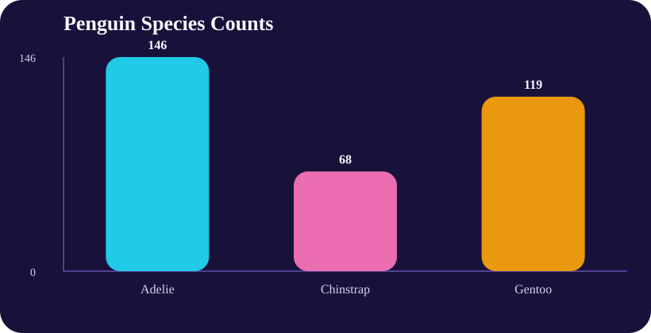
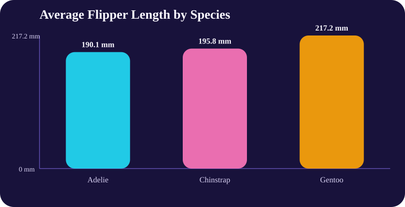
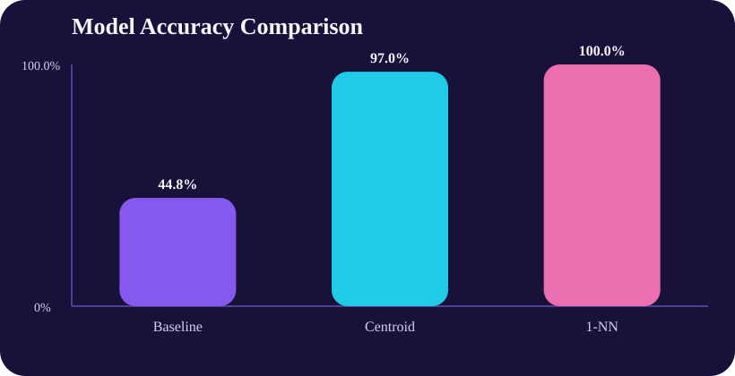

Raw rows
344Original observations in the dataset.
Featured project
This project turns the Palmer Penguins dataset into a portfolio-ready machine learning project. It includes data cleaning, simple classifier comparison, generated charts, exported results files, and a downloadable report that can be shared directly from GitHub Pages. It also reflects the kind of reproducible baseline analysis teams often need before investing in more complex models.
Raw rows
344Original observations in the dataset.
Clean rows
333Rows kept after removing missing values.
Best model
1-NNTop-performing classifier in this project.
Best accuracy
100%67 correct predictions out of 67 test rows.
Title
Objective
Use a real dataset to explore penguin measurements, compare simple classification approaches, and practice a complete machine learning workflow from data cleaning through evaluation.
Process
I downloaded the Palmer Penguins dataset, removed incomplete rows, selected numeric features, created deterministic train and test splits, compared three classifiers, and exported the resulting charts and data files for this portfolio.
Tools
PowerShell, CSV processing, static SVG chart generation, Markdown, HTML, CSS, and GitHub Pages compatible static hosting.
Value Proposition
This project shows that I can structure a practical analysis, build repeatable code, compare model behavior clearly, and turn technical output into a polished public-facing deliverable. That matters for teams that need understandable experimentation, clear reporting, and reliable model comparisons.
Best Fit Roles
Relevant for junior machine learning engineer, data analyst, analytics engineer, and software roles where reproducible analysis and clear communication are important.
Why It Matters
Many teams need trustworthy baselines and interpretable comparisons before investing in more complex ML pipelines. This project shows I can deliver that early analytical foundation.
Deliverable Type
Downloadable report, analysis script, dataset, model results, and SVG visuals. Each file is hosted directly within the portfolio project.
Model comparison
The baseline model predicts the most common class only, while the two distance-based classifiers use penguin measurements to classify species. In this project, even simple methods performed very well.
| Model | Accuracy | Correct / Total |
|---|---|---|
| Majority class baseline | 44.8% | 30 / 67 |
| Nearest centroid classifier | 97.0% | 65 / 67 |
| 1-nearest-neighbor classifier | 100.0% | 67 / 67 |
Chart 01
Class balance for Adelie, Chinstrap, and Gentoo penguins after cleaning the dataset.

Chart 02
A quick visual comparison of a feature that helps separate the species.

Chart 03
The project compares a baseline, nearest centroid, and 1-nearest-neighbor classifier.

Key takeaway
The project shows that clean data and well-chosen features can make straightforward classification methods surprisingly effective.
Files
These are the tangible deliverables tied to the project. They can be downloaded independently of the website and reviewed like a mini project package.
A written summary of the objective, process, tools, value proposition, and results.
Download ReportThe repeatable PowerShell script used to clean the data and generate outputs.
Download ScriptCSV export of the model comparison for use in spreadsheets or documentation.
Download Results CSVThe original penguins CSV plus generated species summary and confusion matrix files.
Download Dataset